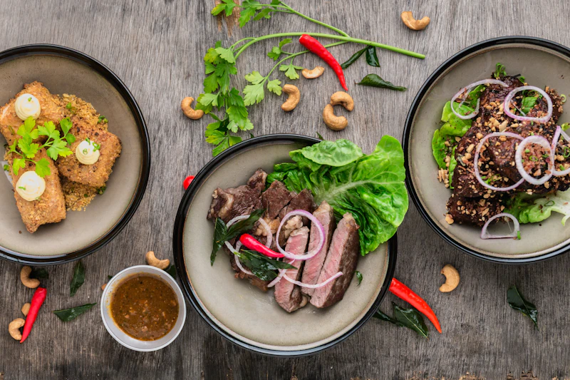

Guide · Revenue protection
How much revenue do restaurants lose to unanswered calls?
The short answer: a lot more than most owners think. The good news: the fix takes minutes.
Updated August 13, 2026 · 7 min read
The phone rings at 7:42 PM. Your host is seating a party of six, your manager is helping buss a table, and the call rolls to voicemail. The caller — a couple who was about to book a table for four that night — hangs up and books the place two doors down.
That scene repeats thousands of times a week across the country. And because it's invisible, most restaurants never count the cost. This guide does the math.
The math behind a missed call
Every phone call a restaurant misses has a value. For a reservation-driven dining room, that value is the check the party would have spent. For a counter-service or pickup-heavy spot, it's the order they were about to place.
A realistic example
- Missed calls on a busy Saturday night
- 12–20
- Share that would have become bookings/orders
- ~60–70%
- Average check for a party of four
- $120
- Lost on one busy night
- $850–$1,700
Run that across an average month and a busy restaurant loses $3,000–$7,000 or more to calls it never answered. Many owners are stunned by the number precisely because the losses are silent — no report, no line item, no one to blame.
Why calls get missed at the worst possible moments
Missed calls aren't random. They cluster around the same minutes every day:
- The 6–8 PM rush — when the host stands empty because the floor is full.
- Lunch turnaround — one host juggling the door, the phone, and a waitlist.
- After hours — guests planning tomorrow or next week.
- Holidays and events — the exact nights the board should be full every time.
These are also the highest-value calls a restaurant receives. Guests who call during peak dinner are confirming same-night plans — they're convertible right now, not "someday."
Voicemail is not an answer
Voicemail feels like a safety net, but it's mostly a one-way street. A large share of callers who reach voicemail simply hang up — they don't leave a message and they don't call back. A "we'll get back to you" that arrives tomorrow doesn't help someone who's deciding where to eat tonight.
Worse, a voicemail box only captures the call. It doesn't book the reservation, take the order, or answer the dietary question. By the time anyone listens, the guest has already gone elsewhere.
The compounding effect
One lost party isn't just one check. It's the birthday dinner they'd have booked at your spot. The regulars they'd have become. The word-of-mouth that fills your Saturday night book six weeks later. Restaurant revenue compounds through repeat guests — and every missed call quietly un-compounds it.
What answering 100% of calls changes
Imagine the same Saturday night, but every call is answered on the first ring. TableTalk does exactly that:
Orders & questions
Pickup orders and menu questions handled for Toast POS restaurants too.
After hours
Overnight and holiday calls become bookings by morning — not dead voicemail.
The cost
A flat $50/month, unlimited calls — less than the check from one party of four.
The bottom line
Unanswered calls are one of the most fixable leaks in restaurant revenue. The numbers are real, the fix is fast, and the return usually shows up in the first week. The alternative — hoping calls answer themselves — is exactly what voicemail already does for you.
Ready to stop the leak?
Start a 7-day free trial. If answering every call doesn't pay for itself, cancel — it's that simple.
Start your free trialQuick answers
What percentage of restaurant calls go unanswered?
Industry estimates put missed calls during peak hours at roughly one in five on busy nights, and far higher during the dinner rush — the exact minutes reservations and pickup orders are most likely to call.
How much does one missed reservation cost a restaurant?
A missed party-of-four reservation represents the check they would have spent — commonly $100–$150 — plus the repeat bookings and word-of-mouth that group would have generated.
Is a phone answering bot really worth it for a small restaurant?
Smaller restaurants feel missed calls most, because every cover counts. At a flat $50/month, protecting one lost party-of-four a month already pays for the service.